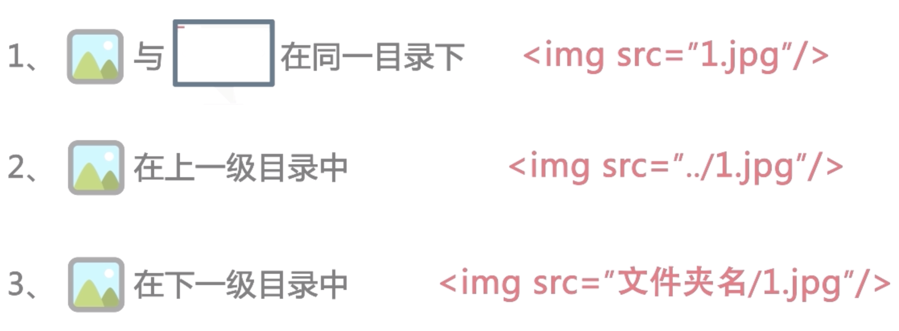
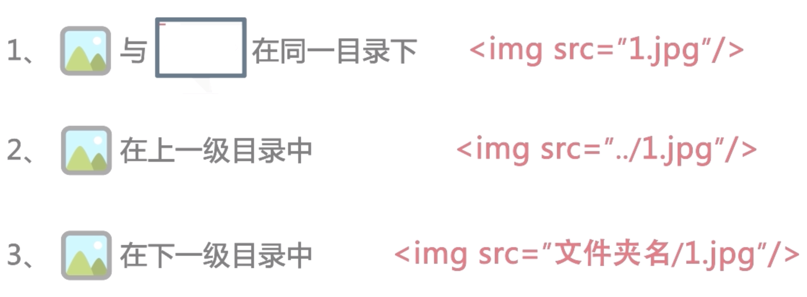

看得见的网页内容, 段落标签p写的
看得见的网页内容, 这是第二段文字
左对齐
右对齐
居中对齐
对行进行伸展，使每行都可以有相等长度
br是换行标签
br也是单标签，空标签，你感受一下
感受到了吧br可以放在段落p标签里
空格也是要用代码写的
如果都要用代码弄空格和换行太麻烦了，所 以有新办法就是直接用pre标签来表现保留出编辑代码文字时的样子
徐少芝 文字斜体 严盛元 文字斜体
徐少芝 文字加粗 严盛元 文字加粗
徐少芝 上标 严盛元 下标
徐少芝 下划线 严盛元 下划线
徐少芝 删除线 严盛元 删除线

 
